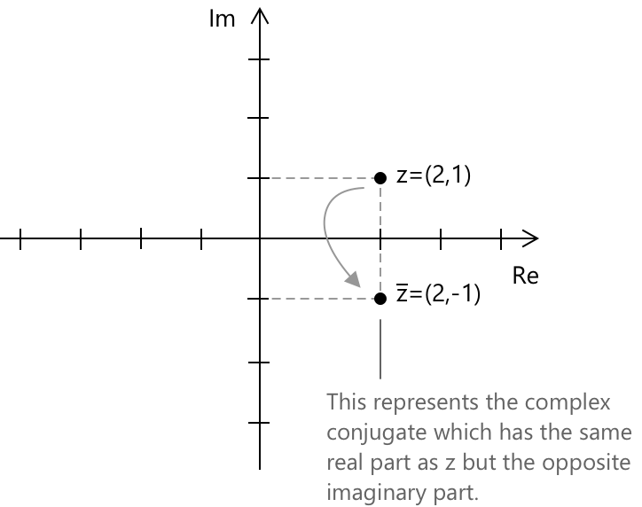

Квадратні рівняння з комплексними розв'язками
Дійсні та комплексні розв'язки
Характер розв'язків квадратного рівняння повністю визначається знаком дискримінанта \(\Delta = b^2 – 4ac\), який з'являється під знаком радикала у формулі квадратного рівняння:
\[x = \frac{-b \pm \sqrt{b^2 - 4ac}}{2a}\]
Коли \(\Delta > 0\), рівняння має два різних дійсних розв'язки. Коли \(\Delta = 0\), два розв'язки збігаються і рівняння має єдиний дійсний корінь, що рахується з кратністю два. Коли \(\Delta < 0\), виникає квадратний корінь із від'ємного числа, і рівняння не має дійсних розв'язків. Однак воно допускає рівно два розв'язки в полі комплексних чисел, і вони завжди утворюють спряжену пару.
За основною теоремою алгебри, поліноміальне рівняння степеня \(n\) має рівно \(n\) коренів у \(\mathbb{C}\), з урахуванням кратності. У застосуванні до квадратного випадку це гарантує, що кожне рівняння виду \(ax^2 + bx + c = 0\) має рівно два кореня в \(\mathbb{C}\), незалежно від знаку дискримінанта.
Нагадаємо, що для комплексного числа \(z = a + bi\) його спряжене визначається наступним чином.
\[\overline{z} = a - bi\]
Число \(\overline{z}\) зображується на площині Гауса точкою, симетричною до \(z\) відносно осі \(x\).

Ця геометрична інтерпретація показує, як спряжені корені природно виникають при розв'язуванні квадратних рівнянь із від'ємним дискримінантом, забезпечуючи візуальний зв'язок між алгебраїчними виразами та їх представленням на комплексній площині.
Кожне квадратне рівняння можна розв'язати, незалежно від того, чи є його дискримінант додатним, нульовим або від'ємним. Коли дискримінант виявляється від'ємним, рівняння просто не має дійсних коренів. Проте воно все ж має два повноцінних розв'язки в системі комплексних чисел. Ці розв'язки завжди утворюють пару комплексно спряжених чисел, що відображає фундаментальну структуру квадратних рівнянь на комплексній площині.
Комплексно спряжені корені
Якщо коефіцієнти \(a\), \(b\) та \(c\) є дійсними, комплексні корені квадратного рівняння \(ax^2 + bx + c = 0\) завжди з'являються спряженими парами. Зокрема, якщо \(z \in \mathbb{C}\) є розв'язком, то \(\overline{z}\) також є розв'язком. Цей результат випливає безпосередньо з властивостей комплексного спряження відносно арифметичних операцій.
Нехай \(az^2 + bz + c = 0\). Беручи спряжене від обох сторін, отримуємо:
\[\overline{az^2 + bz + c} = \overline{0}\]
Оскільки спряження розподіляється по сумах і добутках, і оскільки кожне дійсне число збігається зі своїм спряженим, випливає, що \(\overline{a} = a\), \(\overline{b} = b\) та \(\overline{c} = c\). Тому ліва частина зводиться до наступного.
\[a\overline{z}^2 + b\overline{z} + c = 0\]
Це вихідне рівняння, обчислене при \(\overline{z}\), яке, отже, є коренем того самого рівняння.
Приклад 1
Розв'яжіть квадратне рівняння:
\[x^2 + 4x + 5 = 0\]
Рівняння вже записане у стандартній формі \(ax^2 + bx + c = 0\), з коефіцієнтами \(a = 1\), \(b = 4\) та \(c = 5\). Підставляючи у формулу квадратного рівняння, отримуємо наступне.
\[x_{1,2} = \frac{-4 \pm \sqrt{4^2 – 4 \cdot 1 \cdot 5}}{2 \cdot 1}\]
Дискримінант від'ємний:
\[\Delta = 16 – 20 = -4\]
Оскільки \(\Delta < 0\), рівняння не має дійсних розв'язків. Продовжуючи з формулою квадратного рівняння і записуючи \(\sqrt{-4} = 2i\):
\[x_{1,2} = \frac{-4 \pm 2i}{2}\]
Спрощуючи, два комплексно спряжені розв'язки є наступними.
\[x_1 = -2 + i \qquad x_2 = -2 - i\]
Приклад 2
Наступний приклад ілюструє випадок, коли дискримінант від'ємний і коефіцієнти не всі є цілими числами, що вимагає додаткового кроку спрощення перед тим, як розв'язки можна записати у стандартній комплексній формі.
\[3x^2 - 2x + 4 = 0\]
Рівняння записане у стандартній формі з коефіцієнтами \(a = 3\), \(b = -2\) та \(c = 4\). Підставляючи у формулу квадратного рівняння, отримуємо наступне.
\[x_{1,2} = \frac{2 \pm \sqrt{(-2)^2 – 4 \cdot 3 \cdot 4}}{2 \cdot 3}\]
Обчислюючи дискримінант:
\[\Delta = 4 – 48 = -44\]
Оскільки \(\Delta < 0\), рівняння не має дійсних розв'язків. Записуючи \(\sqrt{-44} = 2\sqrt{11}\, i\):
\[x_{1,2} = \frac{2 \pm 2\sqrt{11}\, i}{6} = \frac{1 \pm \sqrt{11}\, i}{3}\]
Розв'язок:
\[x_1 = \frac{1 + \sqrt{11}\, i}{3} \qquad x_2 = \frac{1 - \sqrt{11}\, i}{3}\]